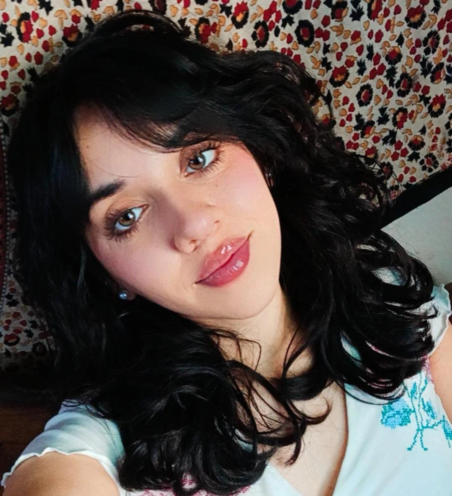

Soy estudiante de programación, actualmente cursando la tecnicatura universitaria en programación de la UTN (universidad tecnológia nacional). Mi carrera tiene un enfoque full stack, aunque mi interes esta en el diseño de aplicaciones web modernas. Tambien practico mis habilidades de diseño en mi trabajo, en donde creo flyers y videos para multiples emprendimientos de los cuales tambien me desempeño como cm.
Como Desorradora Frontend Mi mayor interes, el desarrollo frontend, donde disfruto diseñar interfaces que no solo sean funcionales, sino también fáciles de usar.
Como Community Manager Gestiono la presencia digital de una empresa o marca en las diferentes plataformas de redes sociales.
Como Diseñadora Gráfico Me especializo en la creación visual, utilizando elementos como tipografía, imágenes, colores y composición para diseñar flyers atractivos y efectivos.